The next day I would travel to see the towns in the area where I was staying to the west of Valladolid. The most important town is Medina de Rioseco. It is a town that begins to have importance from the twelfth century, let's say medieval times. It began as a large town in the Andalusian era and with the reconquest it began to be more important. Of the old wall only the San Sebastián Gate remains. If we walk through its streets we can see in the layout of the main street towards the main square architecture from 3 to 4 centuries ago in the arcades and columns.
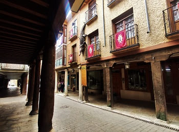
 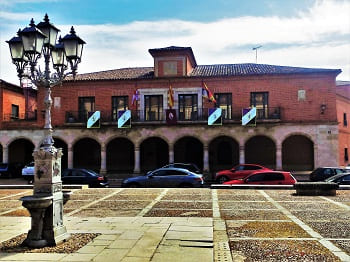
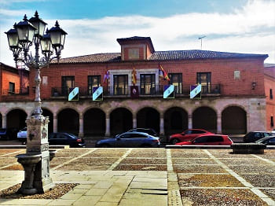
This town has several churches of great importance. Together with Olmedo, Tordesillas and Peñafiel, it is one of the most important towns in religious architecture.
The most important religious center and today converted into a city museum is the convent of San Francisco. Of all the original convent, today the church is preserved, dedicated to the Virgen de la Expectación, resting on the remains of the medieval wall. It has a magnificent Baroque altarpiece and balconies with all kinds of decorations from which monks or important people used to listen to mass.
It is also worth mentioning some side chapels of the cloister, its basement, the Chapter House and the Refectory, now converted into the Chapel of the Nursing Home.
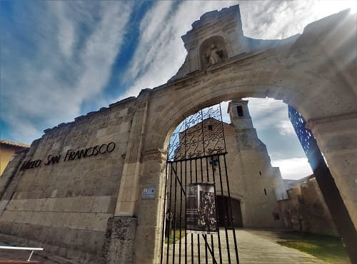
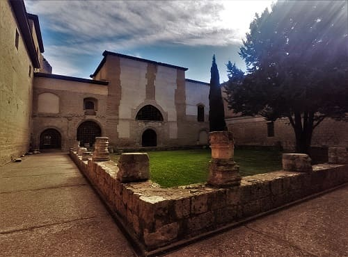

The most important churches are the church of Santa Cruz, which stands next to the main street in one of the most important streets. In the image I add the convent of El Carmen already outside what would be the layout of the old city.
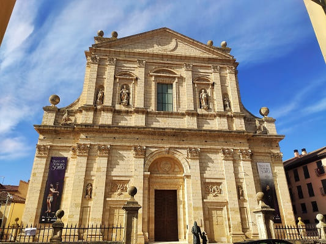
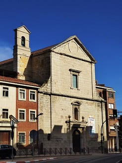
We continue by the church of Santiago Apostol, sometimes called Santiago de los Caballeros, in Medina de Rioseco (Valladolid, Castilla y León, Spain), it is a large-scale Catholic church built between the 16th and 17th centuries in an unusual amalgamation of styles, combining a very late Gothic with the Plateresque, Classicist and Herrerian renaissances, present in the exterior fabric and the interior elevation, and the Baroque, which characterizes the vaulted roofs and the monumental High Altarpiece. On the façade you can see the set of shields and symbols carved in stone, with all the splendor of the Spanish Renaissance style.


We finish by the church of Santa María de Mediavilla, the most important with one of the most valuable chapels in the entire province along with Tordesillas and Peñafiel. In the chapel where some of the most important nobles are buried such as the Benaventes, Don Álvaro Alonso de Benavente, and is represented in its golden dome in polychrome stucco with copious decoration based on saints, ribbons, monsters, children and different whims the final judgement, with Jesus and many of the most important characters of Christianity.
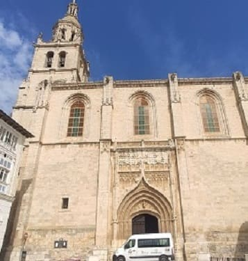
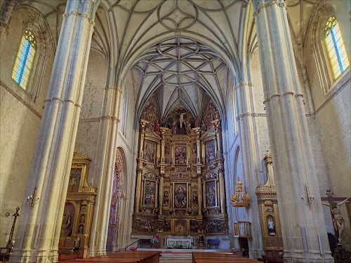
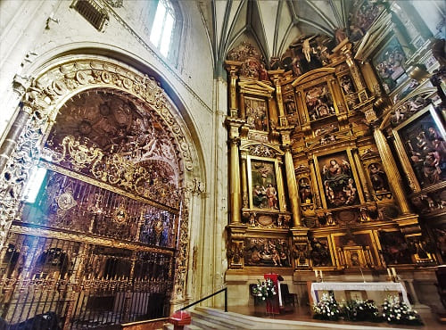
The next town is Valdenebro de Valles. It has a valuable church with a Baroque-style altarpiece and a Gothic-style plan. There are hardly any ruins left of the castle.
Another nearby town is Villalba de los Alcores with a larger church than the previous town of the same style. The castle in this town is for private use.
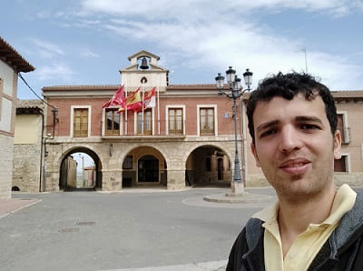
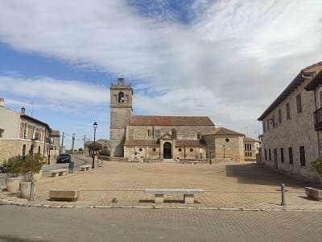
The next town, Montealegre de Campos has a church of incredible value, the church of San Pedro, with a baroque altarpiece of great value, more than one church with the rank co-cathedral or collegiate church. The gothic-style golden dome has carvings of the apostles that give the church a monumental appearance. The castle of Montealegre de Campos is quite large and has been restored inside. A medieval fortress that despite its size does not contain anything special. In addition, the town has another church such as Santa María de la Paz.
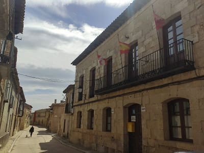
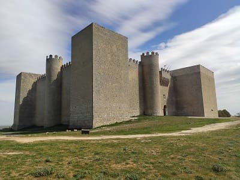
After these four towns, I went to Palencia where I would start at Ampudia.
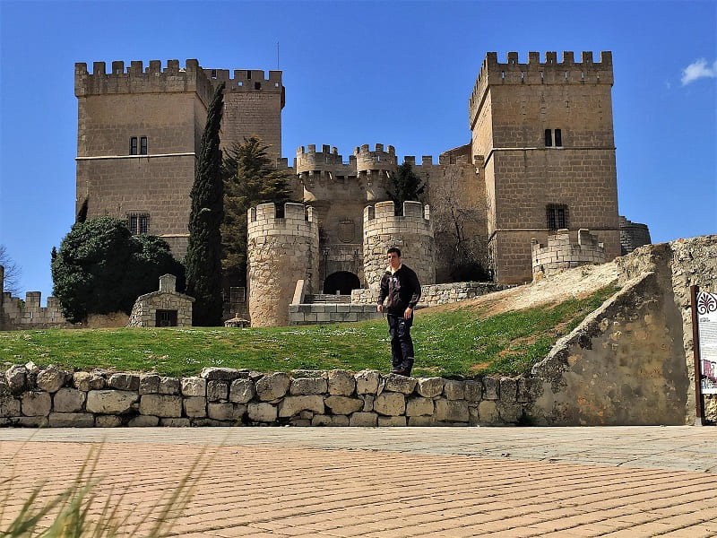
This medieval town is one of the most beautiful in the region with a renowned castle. Not because of its breadth but because of its network of turrets that gives it a very curious aspect. In addition, inside it has palatial rooms since it served as the residence of different nobles.
An early example of a Castilian stately castle-palace, it is a jewel of civil architecture in the region and is in magnificent condition after the careful restoration undertaken in the sixties by Eugenio Fontaneda. The building has a trapezoidal floor plan, it has towers at the corners, the southwest one corresponding to the Keep, and a moat saved by a drawbridge. It is surrounded by a barbican wall with cylindrical towers. The façade is decorated with two escaraguaitas or ornamental sentry boxes and the coat of arms of the Duke of Lerma hangs on the main door. The parade ground has three three-story porticoed pandas with intricate arches, the upper floor being of smaller proportions. Close to the castle is the hermitage of Ampudia , which was built at the same time as the castle.
Apart from the castle, the most important thing in town is the collegiate church of San Miguel and the main street. The collegiate church has a chapel of great value, the chapel of San Ildefonso. The following image shows the Collegiate Church of San Miguel and the Plaza Mayor or Sacred Art Museum.
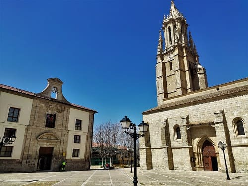
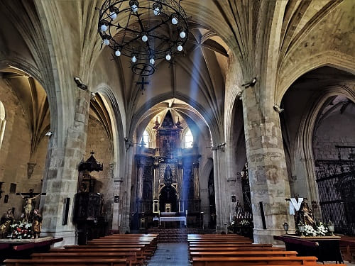
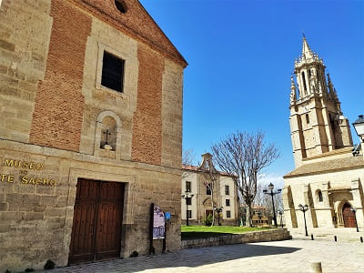
The main street is one of the oldest porticoed streets in Spain in which the original columns that are made up of pilasters or wooden trunks are still preserved.
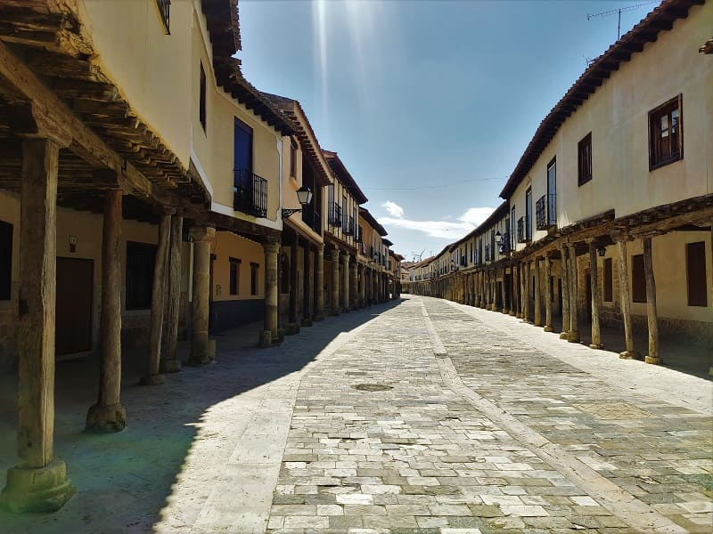
Continuing through Palencia, you would arrive at Dueñas. This large town has quite a lot of heritage, the most important being the wall that is preserved, the church of Dueñas de Santa María de la Asunción whose altarpiece is worthy of any cathedral
The church of Santa María de la Asunción is a late Romanesque (lateral and central apses) and early Gothic (side naves with ribbed vaults) construction from the late 12th and early 13th centuries, which It had to be restored in the fifties due to a fire and in which it has recently been intervened.
At the end of the 18th century, the city had a medieval appearance, although the walls disappeared, and the castle was lost in the mid-19th century. At present, there are no remains of the castle, only a small part of the walled enclosure and the Ojo de la Virgen gate remain standing. Some palatial houses stand out around the church, such as the house of Napoleon.
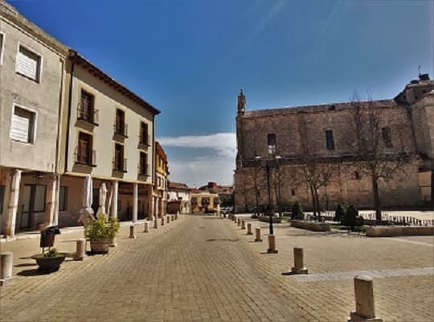
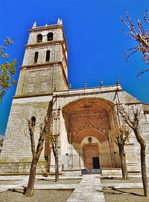
On the outskirts of town, 6 kilometers away, I would go to the Abbey of San Isidro. This Cisternian-style abbey is used today by cloistered monks. You cannot access the interior but you can see it from the outside and enter the church.
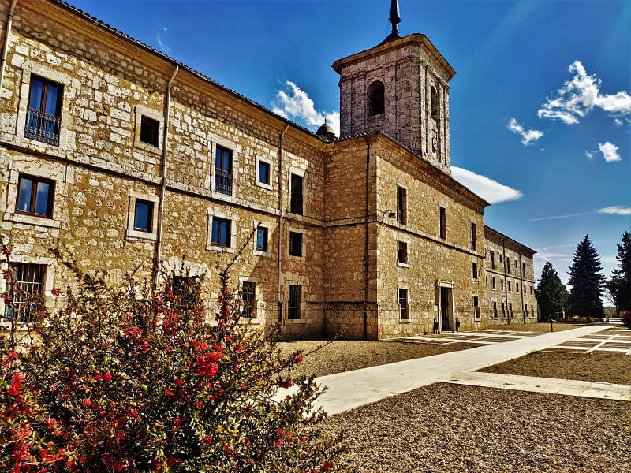
Finally, in the afternoon, I would go to pick up my friend from Vallisoletano to go to Olmedo, one of the most important towns in the province.
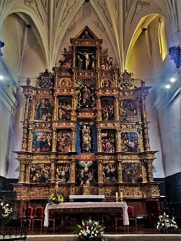
This town is also known for the play El Caballero de Olmedo, by Lope de Vega, the most important playwright of our era. There is a building, the Olmedo palace, where you can see a show with modern technology of the work. The entrance price in 2022 was around 4 euros, being together with the Mudejar miniatures park that is on the outskirts the great claims of the city and what contributes to giving money to the municipal coffers.
I did not deserve the entrance since the churches that close at 7:00 p.m. closed me. The church of Santa María del Castillo has a Baroque altarpiece that is a jewel of religious art as well as a large ancient reliquary. One of the largest and best preserved I've seen so far. Near this church are the other two in the town.
The church of San Andres, which cannot be accessed and can only be seen from the outside, and that of San Juan Bautista, embedded in the wall. This church is almost more important than the church of Santa María, since it contains a chapel of great architectural value just behind the main altar, which is accessed by going down some stairs. This church has been recently restored and you can see the original paintings in the dome as frescoes.
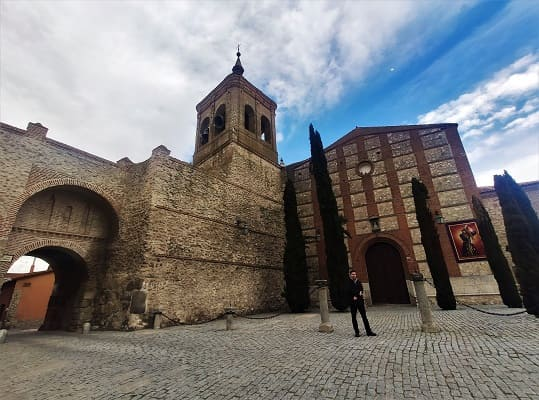
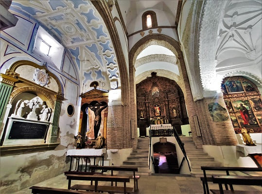
Other notable buildings are the convent of La Merced, which today functions as a municipal library. Also on the outskirts next to Parque Mudejar there is a spa that is one of the most famous in Castilla y León, where there is a four-star hotel. With this town the day of visits would conclude.
© 2016 - All Rights Reserved - Designed by Sergio López Martínez
El sitio se mantiene gracias a la publicidad, por favor Desactiva Adblock para seguir navegando
He desactivado Adblock![[Valid RSS]](https://www.onepointsync.com/wp-content/uploads/2016/08/valid-rss-rogers.png "Validate my RSS feed")